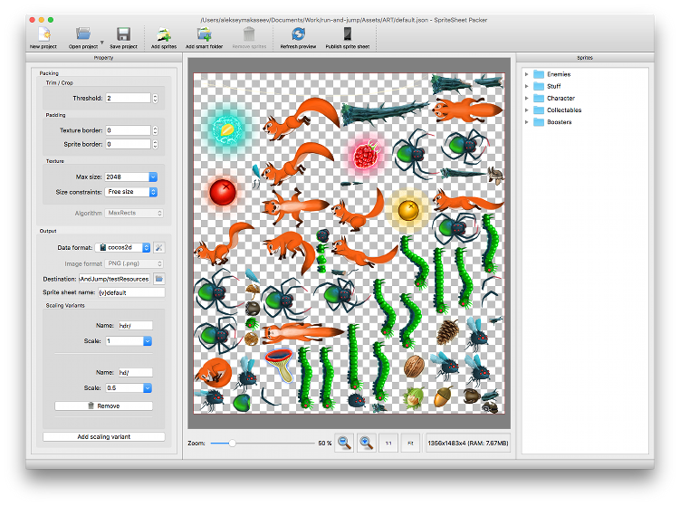
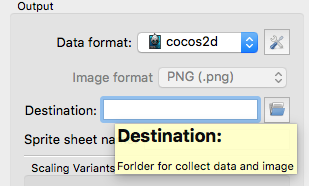
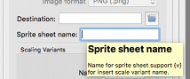
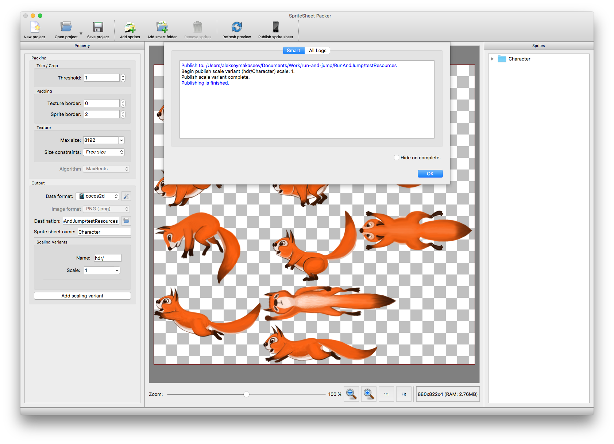

Overview
SpriteSheet Packer is a GUI and command line tool to create sprite sheets.
Supported operating systems: MacOS, Windows and other QT supported platform.
Licensing
SpriteSheet Packer is MIT license, open source project intended to help the beginning developers. Uses QT with LGPL license.
Installation
Download pre-build release version.
Follow this steps for compile from sources:
- Download and install QT with Qt Creater
- Clone sources from https://github.com/amakaseev/sprite-sheet-packer
- Open sprite-sheet-packer.pro, compile and run SpriteSheetPacker.
Usage
GUI

Creating your first sprite sheet
- Run SpriteSheetPacker with out arguments
- Press Add sprites or Add smart folder on toolbar or menu
- Set Destination folder in Output group on Property 
- Enter sprite sheet name 
- Press Publish sprite sheet on toolbar or menu 
Command Line
Usage: SpriteSheetPacker [options] source destination
| Options | Description |
|---|---|
| -h, --help | Displays this help. |
| -v, --version | Displays version information. |
| -f, --format | Format for export sprite sheet data. Default is cocos2d. |
| --texture-border | Border of the sprite sheet, value adds transparent pixels around the borders of the sprite sheet. Default value is 0. |
| --sprite-border | Sprite border is the space between sprites. Value adds transparent pixels between sprites to avoid artifacts from neighbor sprites. The transparent pixels are not added to the sprites, default is 2. |
| --trim | Allowed values: 1 to 255, default is 1. Pixels with an alpha value below this value will be considered transparent when trimming the sprite. Very useful for sprites with nearly invisible alpha pixels at the borders. |
| --powerOf2 | Forces the texture to have power of 2 size (32, 64, 128...). Default is disable. |
| --max-size | Sets the maximum size for the texture, default is 8192. |
| --scale | Scales all images before creating the sheet. E.g. use 0.5 for half size, default is 0.5. |
| Arguments | Description |
|---|---|
| source | Source folder with sprites for packing. |
| destination | Destination folder where saving the sprite sheet. |
Example
$ SpriteSheetPacker /alekseymakaseev/Character /alekseymakaseev/testResources --trim 2 --scale 0.5